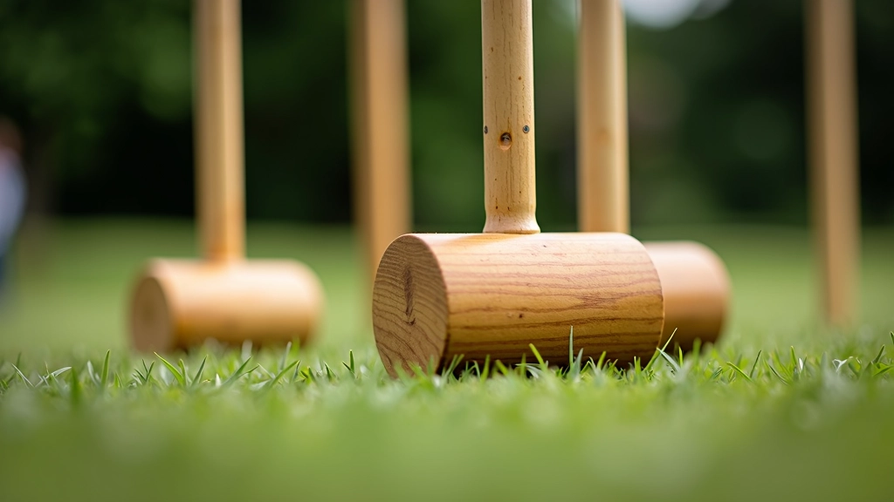

اختيار مطرقة الكروكيه المناسبة لك
دليل شامل لفهم الأوزان والمقابض وكيفية اختيار ما يناسب لعبتك
أوزان متعددة
من 680 إلى 1000 جرام
مقابض متنوعة
خشب وتركيبات حديثة
نصائح عملية
للاعبين بجميع المستويات
حسب قوتك
اختيار ذكي ومدروس
تطور المحتوى
منذ 2020، نركز على نشر معلومات موثوقة عن معدات الكروكيه
البداية
تأسيس منصة متخصصة في معدات الكروكيه والرياضات التقليدية
توسع المحتوى
إضافة أدلة تفصيلية عن أنواع المقابض والأوزان المختلفة
تحسينات مستمرة
تطوير محتوى تفاعلي وإضافة نصائح عملية للاعبين
حاضرنا اليوم
مصدر موثوق للمعلومات الشاملة عن معدات الكروكيه
فهم أوزان المطارق
الوزن يؤثر بشكل كبير على أدائك في اللعب. المطارق الخفيفة توفر تحكماً أفضل، بينما المطارق الثقيلة تعطي قوة أكثر. نشرح الفرق بين كل فئة وزن وتأثيرها على أسلوب لعبك.
اقرأ المزيد

أنواع المقابض والتركيبات
المقبض هو نقطة اتصالك بالمطرقة. المقابض الخشبية توفر إحساساً تقليدياً وطبيعياً، بينما التركيبات الحديثة توفر متانة وراحة إضافية. كل نوع له مزاياه الخاصة.
تعرف على الخياراتاختيار حسب قوتك البدنية
ليس كل الملاعبين متساويون. نقدم نصائح عملية لاختيار المطرقة المناسبة بناءً على قوتك البدنية والمسافات التي تريد تحقيقها. هذا يحسّن من متعة اللعب وأدائك.
استكشف النصائح
قبل وبعد الاختيار الصحيح
قبل الاختيار الصحيح
- إرهاق سريع من الضربات الضعيفة
- عدم التحكم في اتجاه الكرة
- عدم الثقة في الأداء
- آلام في الذراع والكتف
- عدم الاستمتاع باللعبة
بعد الاختيار الصحيح
- ضربات قوية ودقيقة بسهولة
- تحكم كامل في حركة الكرة
- ثقة عالية في كل ضربة
- راحة وعدم الشعور بالإرهاق
- استمتاع حقيقي باللعبة
لماذا يختار اللاعبون أدلتنا
معدات الكروكيه عن قرب
استكشف تفاصيل المطارق والمقابض المختلفة
أوزان متنوعة
المقبض المثالي
الموضع الصحيح
أحدث الأدلة
اكتشف المزيد من المعلومات المفيدة عن معدات الكروكيه
أوزان مطارق الكروكيه: ما الفرق الفعلي؟
شرح تفصيلي لأوزان المطارق المختلفة من 680 إلى 1000 جرام وتأثير كل منها على قوتك وتحكمك.
اقرأ المزيدأنواع المقابض: الخشب والتركيبات الحديثة
مقارنة شاملة بين المقابض الخشبية التقليدية والمقابض المركبة الحديثة ومميزات كل منها.
اقرأ المزيد
اختيار المطرقة حسب مستوى قوتك الجسدية
نصائح عملية لاختيار الوزن المناسب بناءً على قوتك البدنية والمسافات التي تريد تحقيقها في اللعب.
اقرأ المزيدهل لديك أسئلة؟
نحن هنا للمساعدة. تواصل معنا للإجابة على جميع استفساراتك عن اختيار مطرقة الكروكيه المناسبة.
نستخدم ملفات تعريف الارتباط لتحسين تجربتك. باستمرارك في الاستخدام، فإنك توافق على سياستنا.